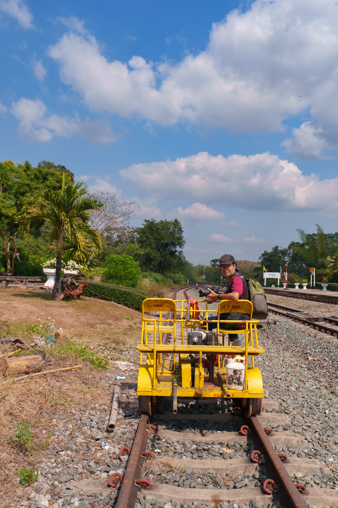
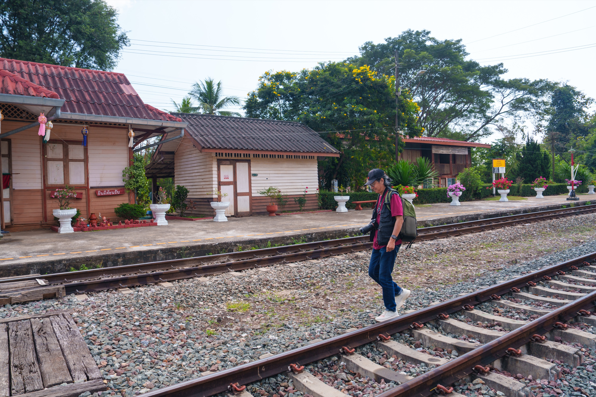
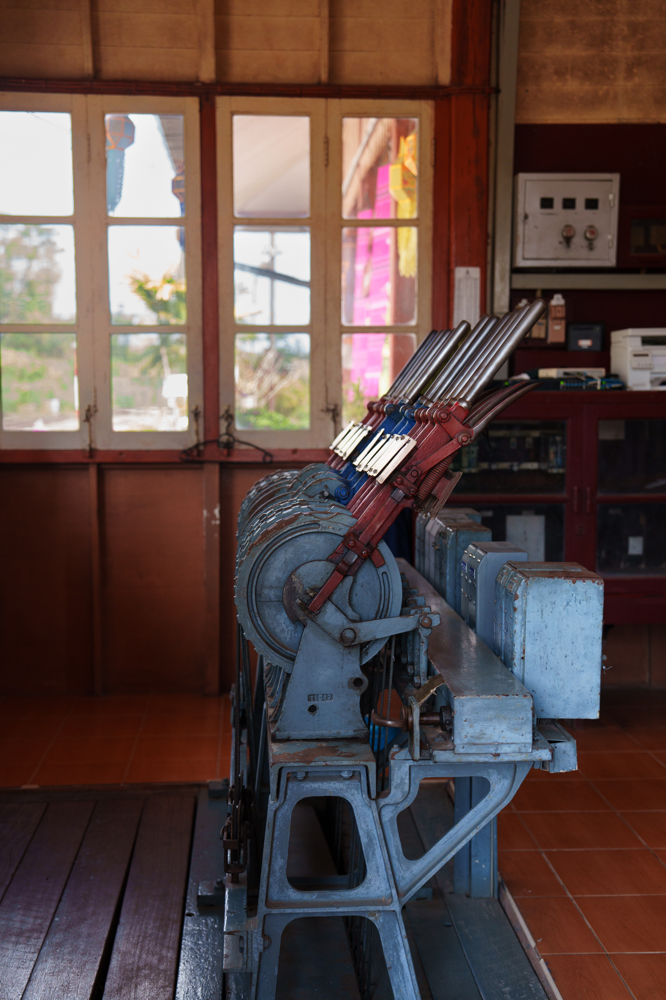
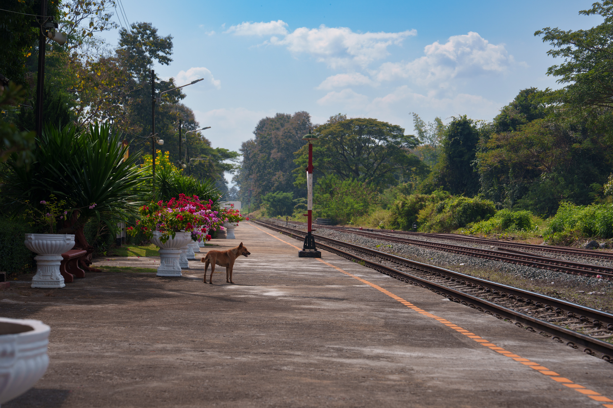
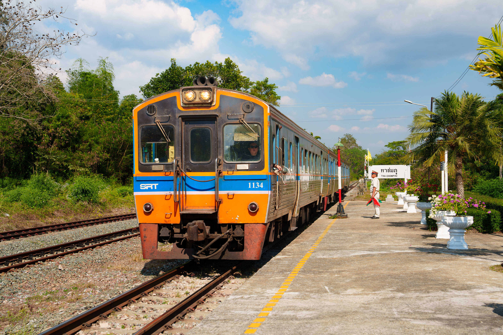

Tha Chomphu，泰北铁路上一个很小的乡间车站，位于清迈与南邦之间。因为实在弄不清它的读音，我和同行的另一位旅行摄影者在清迈站买票时，只好把这串字母输入手机，再递给售票员看。
每天只有一对地方慢车——407和408次——在这里停靠。下车的外国游客很少，专程而来的人，多半是想看看车站附近的白色铁路桥 Saphan Khao。
这座钢筋混凝土拱桥始建于1919年，属于当年南邦—清迈铁路工程的一部分。一般铁路桥多用钢材，它却在一战后钢材紧缺的背景下采用混凝土，到今天仍在使用。白色拱券从绿色山林中突然显现，确实是泰北铁路上很特别的景象。


白天的泰北很热，阳光也晒得厉害。等车的时间很长，我们便躲进桥边的 TeTRIS Café，喝点东西，也从屋顶远望白桥。下午，408次列车终于驶入安静的小站。站员举起信号旗，我们登车离开。这趟旅程没有名胜的拥挤，只有慢车、小站，以及一座藏在山里的百年白桥。


